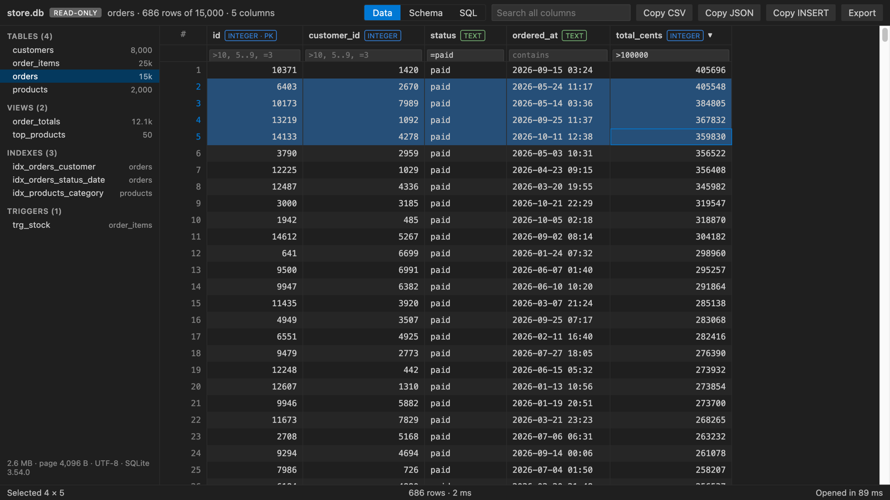

Open files in VS Code and Cursor / Tables and data
Open a SQLite database in VS Code
Install the free SQLite DB Viewer and click the .db, .sqlite or .sqlite3 file. Each table opens as a grid, and the Schema and SQL tabs are one click away. The viewer is read-only and also shows rows that are still in the -wal file, which is where Django, Rails, Prisma and Electron apps keep recent writes.
Free, MIT license. Extension ID zovo.sqlite-table-viewer, version 0.4.3. Needs VS Code 1.90.0 or newer.

Steps in VS Code
- Install SQLite DB Viewer from the Marketplace, or press Ctrl+P (Cmd+P on macOS) and run
ext install zovo.sqlite-table-viewer. - Click a
.db,.sqlite,.sqlite3,.db3,.s3db,.sl3,.vscdbor.gpkgfile. - Pick a table on the left. Sort and filter the columns.
- Open the SQL tab to run a SELECT, WITH or EXPLAIN. The last 20 queries are kept.
- Turn on Live to reload when your app writes to the database.
Steps in Cursor, Windsurf or VSCodium
- Open the Extensions view with Ctrl+Shift+X (Cmd+Shift+X on macOS).
- Search for
zovo.sqlite-table-viewerand click Install. Cursor, Windsurf and VSCodium install from Open VSX, where it is published aszovo/sqlite-table-viewer. - If your editor has no gallery, download the .vsix from the Open VSX page and run "Extensions: Install from VSIX...".
- Then use it the same way as in VS Code.
What SQLite DB Viewer handles
- Committed rows still in the -wal file. Other viewers can show old data for these databases.
- JSON cells as a tree, PNG, JPEG, GIF and WebP blobs as pictures, and float vectors with their stats.
- Copy rows as CSV, JSON or INSERT statements, and export to CSV or JSON.
- In the README test, store.db with 50,000 rows opened in 57 ms.
What it does not do
- Read-only. Editing rows is not supported, and the SQL tab runs no writes.
- The whole file is loaded into memory. Databases over 512 MB show a message.
- Encrypted databases (SQLCipher, SEE) cannot be opened.
Other options
- SQLite Viewer (
qwtel.sqlite-viewer, 3.7 million installs, on Open VSX). A popular viewer, also on Open VSX. - SQLite (
alexcvzz.vscode-sqlite, 4.8 million installs, on Open VSX). Its own description: "Explore and query SQLite databases." - DB Browser for SQLite. A free desktop app. Use it, or the
sqlite3command line, when you need to edit rows.
Install counts and Open VSX status were checked on 8 November 2026. Descriptions in quotes are the extensions' own.
Questions
Can I edit rows in VS Code?
Not with SQLite DB Viewer, which opens files read-only and never saves back. DB Browser for SQLite and the sqlite3 shell can edit.
Why does another viewer show old rows?
In WAL mode, new commits sit in the -wal file until a checkpoint copies them into the main file. A viewer that reads only the main file misses them. SQLite DB Viewer reads the committed part of the -wal file.
Is it free?
Yes, MIT licensed with no paywall and no account. It makes no network requests.
More about SQLite DB Viewer
Read the SQLite DB Viewer page for every feature and setting, or the source code on GitHub.
Related guides
- SQLite Editor & Viewer on the VS Code Marketplace (also on Open VSX). Opens .db and .sqlite files as tables, edits cells and runs SQL.
- SQLite to Excel in VS Code
- Compare two SQLite databases
- Open an Excel .xlsx file in VS Code
- Open an Excel file in Cursor
Zovo Pro and support
Zovo Pro: USD 19 once, every Zovo viewer. It turns on the Pro tools in this extension and in the other Zovo extensions you use. The free features stay free.
After a card payment your license key shows on the next page. Paste it with the command "Zovo Pro: Enter a key".
You can also support the work with no Pro:
Need your format supported?
Open a format request with a sample file, and I reply there whether it can be done. For USD 299 once, through this GitHub Sponsors tier, I add your file format or a missing feature to this extension, with tests, within 7 days.